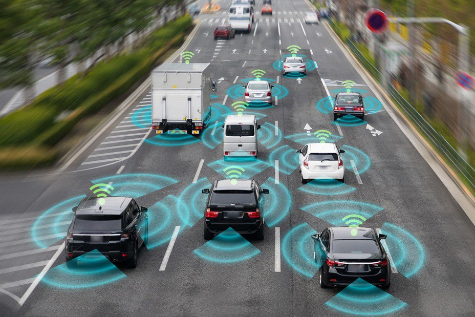

В чем же беспилотный транспорт (vehicles) может применяться и зачем он нужен? В настоящее время происходит активное развитие автоматизации персонального и общественного транспорта, который будет двигаться по дорогам общего пользования, а также, дронов. Это поможет в логистике.
Обычные автомобили, vehicles и дроны оснащаются множеством датчиков, камер, радаров и обрабатывающим данные бортовым компьютером, который принимает решения исходя из анализа дорожной ситуации. Такие тесты всегда происходят под наблюдением водителя, а Tesla, внедрившая систему автопилота во все свои автомобили, предупреждает владельца о том, чтобы он следил за работой системы.
Беспилотный транспорт - транспортное средство, передвигающееся без экипажа при помощи специальной системы автономного управления.
Такой транспорт может передвигаться по специально выделенным полосам по заранее устанавливаемым маршрутам, либо участвовать в общем движении, будучи оснащенным комплексом датчиков, камер, радаров, и принимающим решения бортовым компьютером.
Процесс движения беспилотника — это непрерывное выполнение нескольких подзадач в реальном времени
1) Локализация — определение местоположения беспилотника с сантиметровой точностью. Для этого используются данные с сенсоров и высокоточные карты. В них уже заложена масса полезной информации: например, данные о разметке, светофорах и знаках. Поэтому, к примеру, отсутствие разметки на зимней трассе не смущает ПО беспилотника.
2) Восприятие — идентификация окружающих объектов. Беспилотник фиксирует их, определяет скорость и направление движения.
3) Предсказание — беспилотник пытается спрогнозировать движение других участников дорожного движения. Вероятно, самый сложный этап на данный момент: действия живых водителей часто плохо поддаются логике.
4) Планирование — исходя из трёх предыдущих задач, алгоритмы беспилотника «определяют» собственные действия и отдают команды системам управления. И всё это должно занимать миллисекунды.

Инфографика анализа окружающей среды искусственным интеллектом